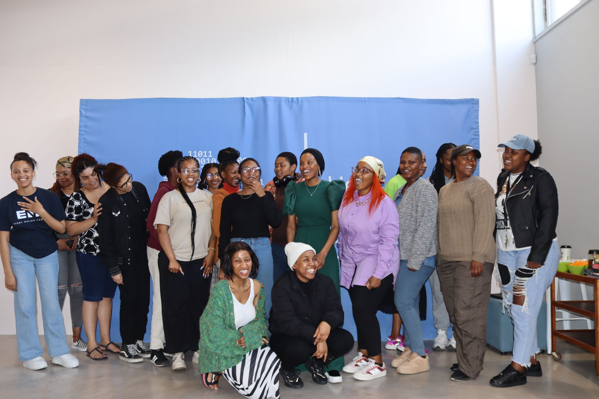

Embracing leadership roles has enriched my journey, providing opportunities to guide and inspire while honing my skills, leading WomenThinkCode for gender diversity and empowering women in tech, and serving as a technical mentor, fostering others' growth with essential skills.
Delving into content creation on my YouTube channel, WomenInTech, is a passion of mine, driven by the desire to inspire young women especially of color,by demonstrating that succeeding in the tech industry is not only attainable but also empowering.Through this platform, I aim to provide a beacon of representation and encouragement, sharing insights and experiences that reflect the diverse and inclusive nature of the technology sector.channel serves as a testament to the potential and capability of women in tech, showcasing their contributions and achievements while dismantling stereotypes and barriers.Ultimately, my aspiration is for viewers to find inspiration and confidence in pursuing their own journeys in the tech field, knowing that they too can make significant strides and impact within the industry.